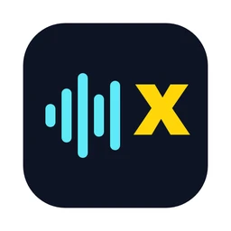

01
Le compte rendu de réunion
Tu enregistres la réunion (téléphone, Teams, Zoom), tu lances WhisperX : tu obtiens le texte complet, découpé par intervenant, prêt à résumer.
Réunion.mp3→WhisperX→Texte par intervenant

Tes réunions, interviews et podcasts transformés en texte, très vite, sur ton PC : qui parle, chaque mot calé au bon moment, sous-titres prêts. Gratuit et open source.

WhisperX transforme un enregistrement (réunion, interview, cours, podcast, vidéo) en texte, sur ton ordinateur. Il part de Whisper, l'IA de reconnaissance vocale d'OpenAI, et ajoute trois choses : une transcription bien plus rapide (jusqu'à 70 fois le temps réel sur une carte graphique, d'après le projet), un horodatage de chaque mot (idéal pour des sous-titres) et l'identification des intervenants (« Intervenant 1, 2… » : il sépare les voix, il ne devine pas les prénoms). Il s'utilise en ligne de commande ou depuis Python : il n'a pas d'interface avec des boutons. Trois façons de l'utiliser :
Le cas idéal : pip install whisperx (Python 3.10 à 3.13), avec le CUDA Toolkit 12.8 installé avant. Moins de 8 Go de mémoire graphique suffisent pour le gros modèle large-v2. Windows et Linux.
Rapide, tout reste chez toiÇa marche aussi sur un PC ou un Mac sans carte graphique (option --device cpu --compute_type int8), mais c'est beaucoup plus lent : prends un modèle plus petit (small, medium) pour garder un temps raisonnable.
Plus lent, mais localLe projet renvoie vers des démos hébergées sur Replicate pour essayer sans rien installer. C'est payant à l'usage, et ton fichier est envoyé sur leurs serveurs.
Ton audio part en ligneTu enregistres la réunion (téléphone, Teams, Zoom), tu lances WhisperX : tu obtiens le texte complet, découpé par intervenant, prêt à résumer.
Chaque mot est horodaté : WhisperX sort directement un fichier .srt ou .vtt à importer dans ton logiciel de montage ou sur YouTube.
Étudiant ou journaliste : tes interviews d'une heure sont transcrites sur ton PC, sans les envoyer sur un site. Il ne te reste qu'à relire.
Transcris chaque épisode pour en faire une page web, des citations ou une description, avec « qui parle » pour distinguer les invités.
Des heures de cours ou de vocaux ? Une fois en texte, une simple recherche te donne le mot et le moment exact où il a été dit.
Un outil de recherche reconnu et très utilisé, mais porté par une petite équipe : il demande un peu de technique.
Versions régulières jusqu'en 2026 (3.8.6 le 25 mai 2026, une 3.8.7 en test en juin), mais peu de nouveautés depuis.
Près de 24 000 étoiles et 2 400 copies (forks) sur GitHub ; outil cité dans de nombreux travaux de recherche et projets de sous-titrage.
Tout tourne en local : aucun compte obligatoire pour transcrire, ton audio ne quitte pas ton PC.
Projet d'un chercheur (Max Bain), soutenu à l'origine par le groupe VGG d'Oxford ; pas de fondation ni de financement stable, juste des dons et un sponsor mis en avant dans le README.
Publié à INTERSPEECH 2023 et 1er du concours de transcription Ego4D 2023 ; version 3 stable, avec des limites connues et documentées (voix qui se chevauchent).
Comment on note : 5 critères notés sur 5, vérifiés sur GitHub, PyPI et dans l'article scientifique (INTERSPEECH 2023) le 16 novembre 2026. La note sur 10 est la moyenne ramenée sur 10.
Bon pour : Transcrire vite et beaucoup, avec qui parle et des sous-titres précis
Bon pour : Une appli à cliquer, sans ligne de commande
Bon pour : Éditeur en ligne, travail en équipe, relecture humaine en option
Bon pour : Prendre des notes de réunion en direct (Zoom, Teams, Meet)

Chaque vidéo RepoPop t'explique un dépôt GitHub utile en moins d'une minute, avec son kit comme celui-ci.